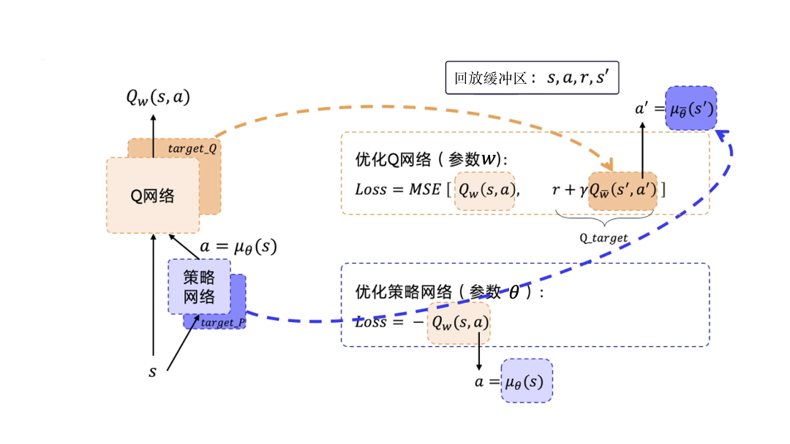

DDPG——深度确定性策略梯度¶
本文图片与源码均来自：https://github.com/datawhalechina/easy-rl
介绍¶
深度确定性策略梯度（DDPG）常常用于连续控制的领域，由决策网络和价值网络构成，决策网络控制智能体做运动，面对一个状态s输出一个动作，价值网络不控制智能体，只是基于状态s来对输出的动作打分，从而指导决策网络的训练。
确定性策略与不确定性策略的区别
-
不确定性策略：对于离散的动作空间，决策函数往往会对每个动作输出一个概率值，智能体根据所得的概率分布随机从动作空间中选取一个动作来执行。即使某一动作的概率值最大，最后也不一定能选到那个动作，因此该策略称为不确定性策略
-
确定性策略：面对一个状态s，决策网络输出的动作是确定的，常常用于连续动作空间的应用。在转向时无论转多少度，都会做转向这个动作，因此该策略称为确定性策略
训练流程¶
该算法主要有两个网络——决策网络V_\pi(s)和动作价值网络Q_w(s,a)，决策网络充当演员的作用，根据当前的状态来做出动作， 动作价值网络充当评论员的作用，根据智能体所做出的动作以及当前的环境来打分。假设环境可以看成观众，则评论员要根据观众的反馈来调整自己的打分策略，演员要根据评论员的评价调整自己的动作决策，因此，动作价值网络Q_w(s,a)通过与环境做交互来优化自己，决策网络V_\pi(s)通过与Q_w(s,a)做交互来优化自己。
Q网络的训练过程与前面DQN算法很相似，因此这里也采用目标网络与经验回放两个策略，流程如下图所示：

注：DDPG也是一个异策略的算法。
训练步骤：
- 初始化决策网络V_\pi(s)、动作价值网络Q_w(s,a)，以及对应的目标网络V_{\pi'}(s)和Q_{w'}(s,a)，并且令其参数相等，同时初始化动作探索的随机过程，即噪声N
- 迭代采样，对于s_t根据当前的策略和噪声来选择动作a_t=V_\pi(s)+N，a_t与环境做交互得到s_{t+1}，将(s_t,a_t,r_t,s_{t+1})存入经验缓冲区，规则与DQN算法一致，采样过程不改变网络参数
- 从经验缓冲区中按batch抽取一个四元组(s_i,a_i,r_i,s_{i+1})，从缓冲区抽取的数据相当于旧参数所采得的样本，即旧参数的预测结果
- 将s_i传入决策网络得到动作\hat a_i，之后将(s_i、\hat a_i)传入价值网络，得到动作分数\hat Q_i，以最大化\hat Q_i为目的来优化决策网络的参数（直接以\hat Q_i分数当做优化目标）
- 将s_{i+1}传入目标决策网络得到动作\hat a_{i+1}，再将(s_{i+1},\hat a_{i+1})传入目标价值网络，利用所得的动作分数来计算实际的Q值y_i=r_i+\gamma Q_{w'}(s_{i+1},V_{\pi'}(s_{i+1}))；将s_i与a_i传入价值网络，得到估计的Q值Q_i，以拉进y_i与Q_i之间的距离来优化价值网络的参数。目标网络只用于计算实际值y_i，因此这个损失只优化价值网络的参数，不优化目标价值网络的参数
- 软更新两个目标网络\pi'\leftarrow\tau\pi+(1-\tau)\pi'、w'\leftarrow\tau w+(1-\tau)w'
TD3¶
与DQN算法类似，在Q网络的训练过程，同样也会存在Q分数的高估问题，即Q函数会显著地高估实际的Q值，对此在TQ3算法中引入了三个改进措施来解决这一问题：
- 截断的双Q学习，通过最小化均方误差来同时学习两个Q函数Q_{w_1}和Q_{w_2}，两个Q函数都使用同一个目标，最终实际的Q值计算方法为：
注：此时有两个价值网络和一个决策网络，并且都对应有一个目标网络，因此一共有六个网络
- 延迟的策略更新。同时更新决策网络和价值网络会导致不稳定，因此TD3算法以较低的频率更新决策网络，以较高的频率更新价值网络（实验证明这样效果好），通常每更新两次价值网络就更新一次决策网络
- 目标决策平滑，TD3算法在目标决策网络中加入噪声，平滑Q沿动作的变化，使决策网络更难利用Q函数的误差：
其中，\epsilon\in N(0,\sigma)。
DDPG源码实现¶
网络结构¶
决策网络的输入维度为状态数据的维度，输出维度为动作的个数（表示要做几个动作），这里每个数据均表示一个连续的值
价值网络的输入维度为状态数据的维度加上动作的个数，输出维度为1
class Actor(nn.Module):
def __init__(self, state_dim, action_dim, hidden_dim, init_w=3e-3):
super(Actor, self).__init__()
self.linear1 = nn.Linear(state_dim, hidden_dim)
self.linear2 = nn.Linear(hidden_dim, hidden_dim)
self.linear3 = nn.Linear(hidden_dim, action_dim)
self.linear3.weight.data.uniform_(-init_w, init_w)
self.linear3.bias.data.uniform_(-init_w, init_w)
def forward(self, x):
x = F.relu(self.linear1(x))
x = F.relu(self.linear2(x))
x = torch.tanh(self.linear3(x))
return x
class Critic(nn.Module):
def __init__(self, state_dim, action_dim, hidden_dim, init_w=3e-3):
super(Critic, self).__init__()
self.linear1 = nn.Linear(state_dim + action_dim, hidden_dim)
self.linear2 = nn.Linear(hidden_dim, hidden_dim)
self.linear3 = nn.Linear(hidden_dim, 1)
# 随机初始化为较小的值
self.linear3.weight.data.uniform_(-init_w, init_w)
self.linear3.bias.data.uniform_(-init_w, init_w)
def forward(self, state, action):
# 按维数1拼接
x = torch.cat([state, action], 1)
x = F.relu(self.linear1(x))
x = F.relu(self.linear2(x))
x = self.linear3(x)
return x
训练流程¶
def train(cfg, env, agent):
print('开始训练！')
print(f'环境：{cfg.env_name}，算法：{cfg.algo_name}，设备：{cfg.device}')
ou_noise = OUNoise(env.action_space) # 动作噪声
rewards = [] # 记录所有回合的奖励
ma_rewards = [] # 记录所有回合的滑动平均奖励
for i_ep in range(cfg.train_eps):
state = env.reset()
ou_noise.reset()
done = False
ep_reward = 0
i_step = 0
while not done:
i_step += 1
action = agent.choose_action(state)
action = ou_noise.get_action(action, i_step)
next_state, reward, done, _ = env.step(action)
ep_reward += reward
# 将每个阶段的采样数据存入缓冲区
agent.memory.push(state, action, reward, next_state, done)
agent.update()
state = next_state
if (i_ep + 1) % 10 == 0:
print('回合：{}/{}，奖励：{:.2f}'.format(i_ep + 1, cfg.train_eps, ep_reward))
rewards.append(ep_reward)
if ma_rewards:
ma_rewards.append(0.9 * ma_rewards[-1] + 0.1 * ep_reward)
else:
ma_rewards.append(ep_reward)
print('完成训练！')
return rewards, ma_rewards
更新阶段¶
def update(self):
if len(self.memory) < self.batch_size: # 当 memory 中不满足一个批量时，不更新策略
return
# 从经验回放中(replay memory)中随机采样一个批量的转移(transition)
state, action, reward, next_state, done = self.memory.sample(self.batch_size)
# 转变为张量
state = torch.FloatTensor(state).to(self.device)
next_state = torch.FloatTensor(next_state).to(self.device)
action = torch.FloatTensor(action).to(self.device)
reward = torch.FloatTensor(reward).unsqueeze(1).to(self.device)
done = torch.FloatTensor(np.float32(done)).unsqueeze(1).to(self.device)
# 计算决策网络损失，直接以Q分数当做优化目标
policy_loss = self.critic(state, self.actor(state))
policy_loss = -policy_loss.mean()
# 计算价值网络损失
next_action = self.target_actor(next_state)
target_value = self.target_critic(next_state, next_action.detach())
expected_value = reward + (1.0 - done) * self.gamma * target_value
expected_value = torch.clamp(expected_value, -np.inf, np.inf)
value = self.critic(state, action)
value_loss = nn.MSELoss()(value, expected_value.detach())
self.actor_optimizer.zero_grad()
policy_loss.backward()
self.actor_optimizer.step()
self.critic_optimizer.zero_grad()
value_loss.backward()
self.critic_optimizer.step()
# 软更新
for target_param, param in zip(self.target_critic.parameters(), self.critic.parameters()):
target_param.data.copy_(
target_param.data * (1.0 - self.soft_tau) +
param.data * self.soft_tau
)
for target_param, param in zip(self.target_actor.parameters(), self.actor.parameters()):
target_param.data.copy_(
target_param.data * (1.0 - self.soft_tau) +
param.data * self.soft_tau
)
注：以上仅是笔者个人见解，若有问题，欢迎指正
初步完稿于：2023年5月17日